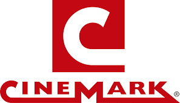

MI MUSICA, CANTANTES Y ARTISTAS
MI MUSICA, CANTANTES Y ARTISTASFAVORITOS


.jpg)

.webp)
Regresar al curriculum
| Cantantes Famosos | NOTICIAS | PELICULAS | ||
|---|---|---|---|---|
| Nathan John Feuerstein (Gladwin, Míchigan; 30 de marzo de 1991), más conocido profesionalmente como NF (estilizado como ИF) es un rapero, cantante y compositor estadounidense, Lanzó un EP en 2014 con Capitol CMG, NF , que fue su gran avance en las listas de Billboard. Ha lanzado cinco álbumes de estudio: Mansion en 2015, Therapy Session en 2016, Perception en 2017 que debutó N°1 en los Billboard 200 Charts, The Search en el 2019 y CLOUDS (THE MIXTAPE) en el 2021. El tercer sencillo de Perception, Let You Down, le dio la fama mundial además de entrar en los charts internacionales y certificarse triple platino en Estados Unidos. Su música está enfocada a su crecimiento como rapero y superación personal. | ||||
| Carlos Vidal más conocido artísticamente como Lytos, es un cantante multifacético de música hip-hop y urbana, nació en Palma de Mallorca, España en 1988. Desde muy joven le apasionaban diferentes artes como la pintura, la escritura y la música, durante su adolescencia se inclinó más por la música, empezando a absorber el talento urbano de la calle, allí también empezó a presentarse bailando break dance y rapeando. Su inicio musical más profesional ocurrió al crear la banda sonora para una película, pero algunas personas le ofrecieron apoyarlo para darse a conocer. Las promesas no eran ciertas debido a esto estuvo algún tiempo aprendiendo a producir y mezclar, lo que le permitió crecer en otro ámbito. | |||
| León Rubén Larregui Marín (Ciudad de México, México, 1 de diciembre de 1973) es un cantante y compositor mexicano, conocido por ser el vocalista de la banda mexicana Zoé. Como solista ha grabado dos álbumes: en el 2012 lanzó su álbum Solstis con el que se reconoció la canción Brillas y Souvenir, 4 años más tarde en el año 2016 Voluma resaltando Locos. Un año más tarde, se volvería a reunir con la banda Zoé para crear el álbum Aztlán y lanzarlo en 2018. | |
 | |
| Avenged Sevenfold (frecuentemente abreviado como A7X) es una banda estadounidense de heavy metal originaria de Huntington Beach, California, fundada en 1999. Avenged Sevenfold comenzó como una banda de género metalcore con su álbum debut Sounding the Seventh Trumpet de 2001 y más tarde con su segundo álbum Waking The Fallen de 2003, en el que The Rev y M. Shadows utilizaron el estilo vocal screaming en muchas canciones de este álbum. La banda es principalmente conocida por la versatilidad de sus estilos musicales, sus dramáticas portadas en cada uno de sus álbumes y su logotipo: Deathbat. Sus integrantes son M. Shadows (vocalista), Synyster Gates (guitarrista líder y coros), Zacky Vengeance (guitarrista rítmico y coros), Johnny Christ (bajista).Anteriormente, el baterista y vocalista era The Rev hasta su muerte en diciembre de 2009. Asimismo, el exbaterista de Dream Theater, Mike Portnoy, entró temporalmente a Avenged Sevenfold para ayudar a sus miembros en sus próximos conciertos, incluyendo la gira Nightmare After Christmas durante el 2010 y salió de la banda el 16 de diciembre de ese mismo año tras concluirla. |
Regresar al curriculum |
||